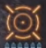

| 공식 유튜브 채널 무기 소개 영상 |
|---|
|
|
| 모션명 | 모션치 | 속성보정 | 계열 |
|---|---|---|---|
| 기폭용탄 | 고정26, 불3 | 1 | 고정탄 |
| 기폭용탄2 | 고정32, 불5 | 1 | 고정탄 |
| 기폭용탄3 | 고정49, 불7 | 1 | 고정탄 |
| 반격용탄 | 고정26, 불3 | 1 | 고정탄 |
| 반격용탄1 | 고정49, 불? | 1 | 고정탄 |
| 반격용탄2 | 고정73, 불? | 1 | 고정탄 |
| 반격용탄3 | 고정110, 불? | 1 | 고정탄 |
| (점프)(리로드)근접공격 | 25 | 1 | 타격 |
| Lv1 통상탄 | 10 | 1 | 탄 |
| Lv2 통상탄 | 20 | 1 | 탄 |
| Lv3 통상탄 | 34 | 1 | 탄 |
| Lv1 관통탄 | 7 | 1 | 탄 |
| Lv1 관통탄(10타~) | 7x0.2 | 1 | 탄 |
| Lv2 관통탄 | 7 | 1 | 탄 |
| Lv2 관통탄(10타~) | 7x0.2 | 1 | 탄 |
| Lv3 관통탄 | 9 | 1 | 탄 |
| Lv3 관통탄(10타~) | 8x0.2 | 1 | 탄 |
| Lv1 산탄 | 6 · 6 · 6 | 1 | 탄 |
| Lv2 산탄 | 7 · 7 · 7 · 7 · 7 | 1 | 탄 |
| Lv3 산탄 | 8 · 8 · 8 · 8 · 8 · 8 · 8 | 1 | 탄 |
| Lv1 철갑유탄 | 1 · 고정12, 불3 | 1 | 탄 · 고정탄 |
| Lv2 철갑유탄 | 1 · 고정17, 불5 | 1 | 탄 · 고정탄 |
| Lv3 철갑유탄 | 1 · 고정24, 불5 | 1 | 탄 · 고정탄 |
| 화염탄 | 8 | 1 | 탄(속성치220) |
| 수냉탄 | 8 | 1 | 탄(속성치220) |
| 전격탄 | 8 | 1 | 탄(속성치220) |
| 빙결탄 | 8 | 1 | 탄(속성치220) |
| 멸룡탄 | 2 | 1 | 탄(속성치180) |
| 참렬탄 | 1 · (6x1.05)x5 | 1 | 탄 · 절단 |
| Lv1 독탄 | 1 | 1 | 탄 |
| Lv2 독탄 | 1 | 1 | 탄 |
| Lv1 마비탄 | 1 | 1 | 탄 |
| Lv2 마비탄 | 1 | 1 | 탄 |
| Lv1 수면탄 | 1 | 1 | 탄 |
| Lv2 수면탄 | 1 | 1 | 탄 |
| Lv1 멸기탄 | 1 | 1 | 탄 |
| Lv2 멸기탄 | 1 | 1 | 탄 |
| 탑승 : 연사 | 20 · 20 · 20 · 35 | 1 | 탄 |
| 클러치클로 | 8 | 0 | 절단 |
| 클로공격 | 8 | 0 | 절단 |
| 무기공격 | 1 · 고정49, 불3 | 1 | 탄 · 고정탄 |
| 명칭 | 설명 |
|---|---|
|
속사 |
1개의 탄으로 3회 발사가 가능. 2번째, 3번째 데미지는 물리, 속성 각각 0.5배 보정 적용됨. |
|
단발자동장전 |
1발밖에 장전되지 않지만, 반동-중, 장전속도-빠름 적용. 장전확장이 적용되어도 1발 발사 시 자동 리로드. |
| 이미지 | 거리 | 보정 | 비고 |
|---|---|---|---|
|
|
가까운 거리 | 0.8 | 산탄, 속성탄, 상태이상탄, 멸기탄 적용X |
|
 |
적정 거리 | 1 | |
|
|
먼 거리 | 0.1 | 가까울 때와 에임표시 동일 |
| 명칭 | 효과 | 비고 |
|---|---|---|
| 반동 억제 파츠 | 탄 발사 시의 반동이 줄어듦 | |
| 리로드 보조 파츠 | 탄 장전 시의 장전 속도가 빨라짐 | |
| 흔들림 억제 파츠 | 탄 발사 시의 흔들림이 줄어듦 | |
| 근거리 사격 강화 파츠 |
근거리에서 사격 시 물리데미지 증가 1파츠 → 1.2배 2파츠 → 1.3배 3파츠 → 1.35배 4파츠 → 1.4배 |
통상탄, 관통탄, 산탄, 철갑유탄의 착탄부분, 참렬탄 착탄부분, 속성탄, 상태이상탄, 멸기탄에 효과 관통탄의 경우 심안/탄도강화 스킬이 없으면 적정거리 에임에서 파츠효과를 받지 못하며, 효과 거리가 매우 짧음 |
| 원거리 사격 강화 파츠 |
원거리에서 사격 시 물리데미지 증가 1파츠 → 1.2배 2파츠 → 1.35배 3파츠 → 1.4배 4파츠 → 1.45배 |
통상탄, 관통탄, 산탄, 철갑유탄의 착탄부분, 참렬탄 착탄부분, 속성탄, 상태이상탄, 멸기탄에 효과 |
| 회피 장전 파츠 |
스텝 후 슬라이딩 중에 선택되어있는 탄을 자동장전 탄의 기본 장전속도를 무시하고 장전이 가능 장착 한 파츠의 수 = 자동장전 탄 갯수 |
라이트보우건 전용 파츠 |
| 기폭용탄-개조 | 기폭용탄을 반격용탄으로 바꿈 | 라이트보우건 전용 파츠 |
| 탄환 중량화 파츠 |
관통계 탄을 맞춘 후 다음 맞추기 까지의 간격이 짧아짐 복수장착불가 탄속 강화 파츠와 병용불가 |
|
| 탄속 강화 파츠 |
적정거리, 먼거리 보정의 적용 거리가 늘어남 복수장착불가 탄환 중량화 파츠와 병용불가 |